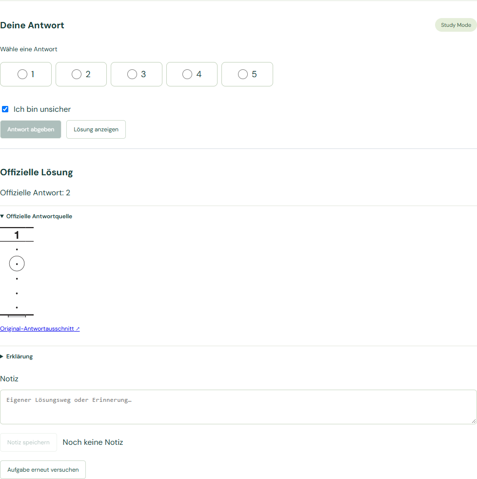
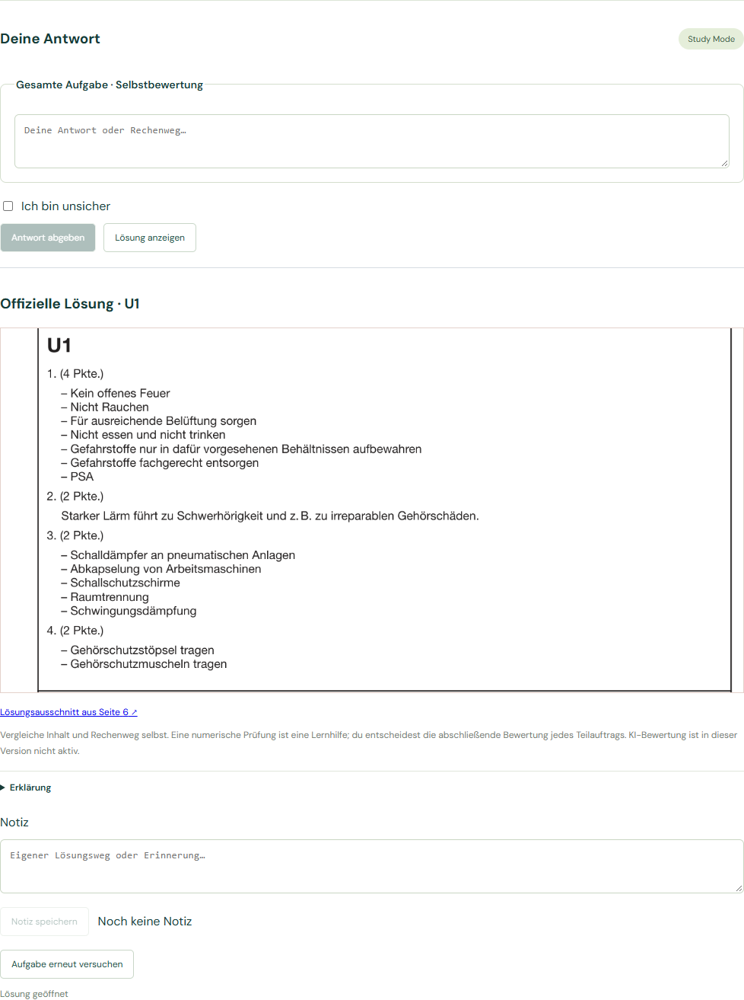
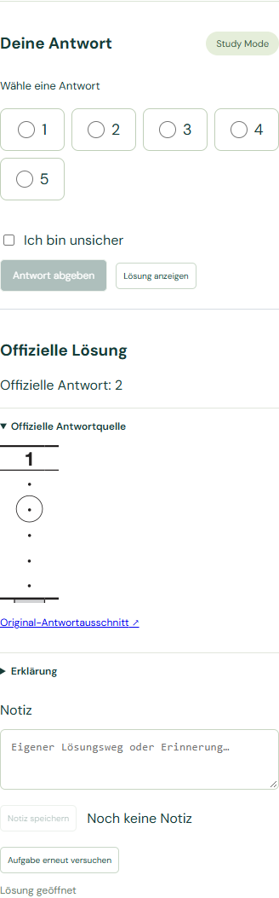
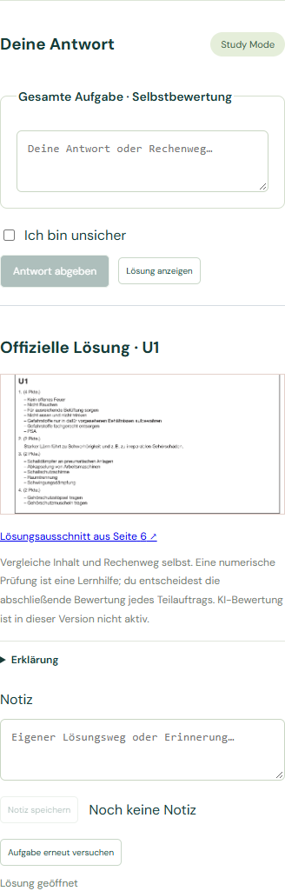

Isolierter Browser-Test: keine persönlichen Nutzerdaten geändert. Keine PDF-Verarbeitung.
Blankes MC/U: Lösung ohne Versuch oder Abschluss. Teilantworten bleiben erhalten und bearbeitbar. Unsicher wird erst bei Abgabe im Versuch gespeichert. Erneutes Anzeigen erhält den bestehenden Versuch. Prüfungsmodus bleibt unverändert.
Automatische Browser-Ergebnisse · Freies Lernen öffnen



